最近行き詰まりを感じおもしろいことないかな～～～という気持ちが発生し、面白いといえば自明に歴史言語学であり、かつ実は前に生やしたバート語サイドの歴史言語学があるではないか！という。
祖語云々が話題になってますね（私もいせにほに出したこいつらを拡充していかんとな） pic.twitter.com/clvMZ1GBFQ
— jekto.vatimeliju@hsjoihs@.sozysozbot. (@sosoBOTpi) 2020年5月23日
スキュバート、これのオレンジやねえ https://t.co/t4sv7hUodj
— Fafs F. Sashimi＠Ers lysnesna adit selun, ysnieler. (@sashimiwiki) 2020年5月23日
まあ要するに、そろそろラネーメ諸言語の比較だったり内的再構だったり夢のお告げだったりでバート語という巨大な対象にtackleすることに一定の足りなさを感じてきたので、せっかく生やしてあって「いせにほ」にも出した設定があるのだからそいつらを深めていくのだという話。
| 2019年10月12日 | Fafs F. Sashimi「いせにほ#252以降はグォン・アルト藩国で登場人物たちが行動することになりました。つきましてはバート語の翻訳を依頼する可能性があり、ここで考えなければならないことは藩国時代のバート語はどんな感じなのかについてなのですが、翻訳含め一週間以内にこれがまとめられたらこちらにとっては嬉しいんですけどいかがでしょう。」 | |
| 2019年10月14日 | Fafs「今のバート語と離れ過ぎてないことが望ましいですね。読者がバート語だと気づけて、investigateとかに誘導できたらいいなと思う。」 | |
| 2019年10月15日 | j.v「一応暫定案ができた。こんな感じの路線でええかい」Fafs「良いんじゃないですかねえ！」と、この辺りで現状の、「VとCVだけで表記（子音クラスタが激しくないのでヒッタイトやミケーネギリシャ語ほどつらいことにはなっていない）」辺りが固まる | |
| 2019年10月18日 | j.v「そうそう、祖語の細分で r₁・r₂・r₃ が立っているわけで、これを細分しないとき（例の祖語辞書の表記）は全部 r- と表記するという根拠が今の所ないから『スキュリオーティエ・バート語で同一の表記になっているからです！』という暫定案で救おうとしているんですが、どう思います？」Fafs「祖語研究を進めたのはバート人だったのかな」j.v「とは限らない。多分表音的に書いている資料の量。」Fafs「なるほど、それなら確かに納得できる。」j.v「他が軒並み燐字しか使わなくて研究者が泣いてる説、高いため」fafs「バート＝アイル＞タカン＞パイグ、という表音資料の数のイメージ」 | |
| 2019年10月18日 | j.v「そういえば、祖語phの濁化はスキュバートの時点で起こっているので、phertarsという発音はそれ以前のかなり古い借用か、それともbh-をph-と聞き取った結果かのどちらかだね、という話があったな。あ、でも††そもそもスキュバートでは書き分けないからまだ濁化してなかったかもね！††『スキュバートの時点で起こっている』と判断される根拠、たしかに如何にして存在させることができるんだろうか」 | |
| 2019年10月23日 | スキュバート翻訳依頼リストが発生 | |
| 2019年10月26日 | 13個中6個終わらせた | |
| 2019年10月29日 | Fafs「そういえば、利用する転写ですけど、s.y.と以前通話した時にやっぱりIPAで聞こえるのはおかしい（第一部で、リパライン語の/y/を聞き取りきれてないことなどから）ということで音節文字転写を採用することにします。」j.v「了解です（よし）（古いときのIPAをこの段階で真理設定にしてしまうと考察余地が減って不便という問題があったのよな）」 | |
| 2019年11月16日 | j.v「私はスキュバート用になる可能性がそこそこある文字の画像起こしをきれいにする作業をします」→音節文字のためのグリフを定め終わる（音価はまだ） | |
| 2019年11月18日 |
| |
| 2020年1月4日 | 書き初めに間に合わせるべく、グリフと音価の対応を考え始める。いせにほで使った音節については対応を作り終わるが、書き初めをすることはなかった。 | |
| 2019年2月10日 | 「せっかく決めたんだし」と便箋に書いていくも、途中で飽きて放置 | |
| 2019年5月28日 | いせにほで使った音節については便箋に書き終わった。 |
ということで、120から6引いて114種の音価を持つわけである。
一方でグリフは193個ある。5つ分の破音があるので198個に対して114種の音価が対応する。そのhomophoneの個数は分布を雑に推定して定数倍することでいい感じに生成。
予め用意しておいたグリフ一覧がこちら。

これを手動で切り分け、
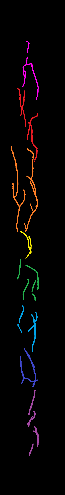 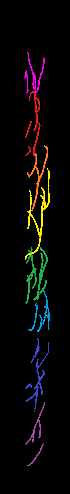 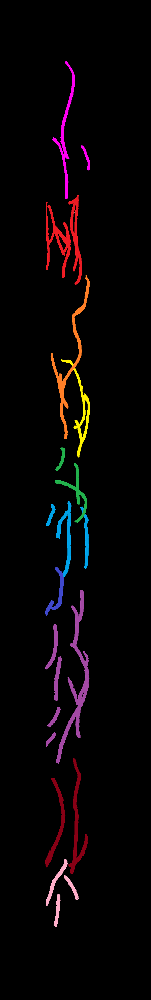 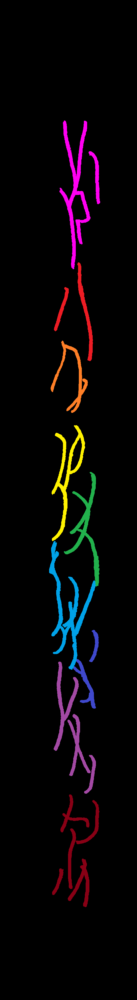 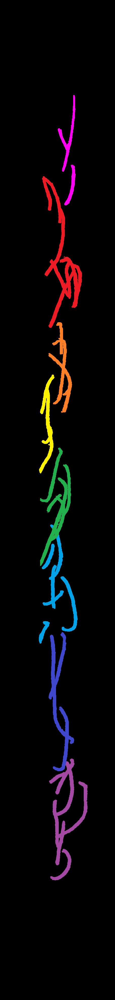 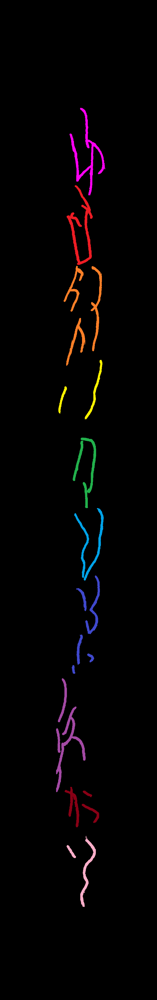 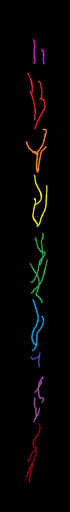 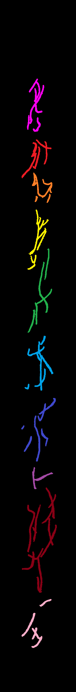 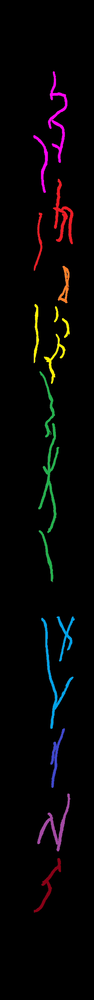 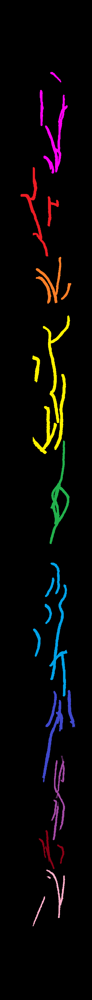 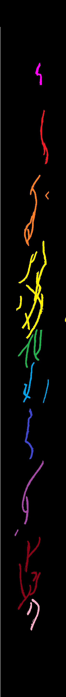 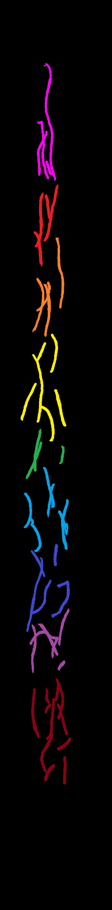 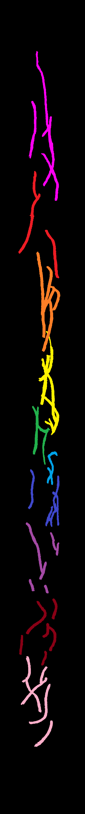 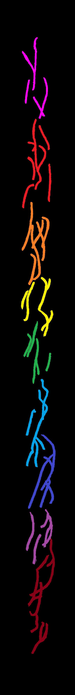 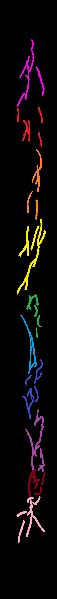 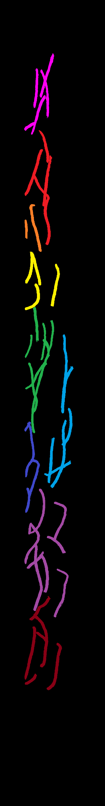 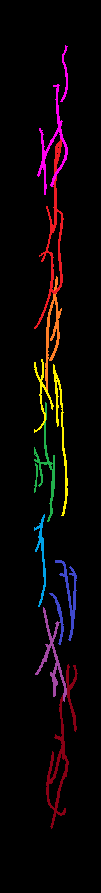 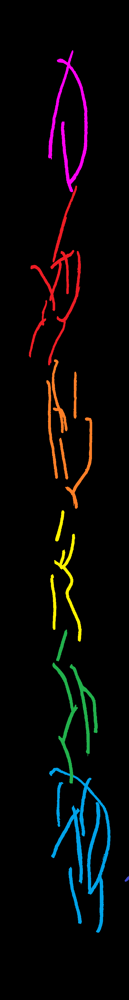 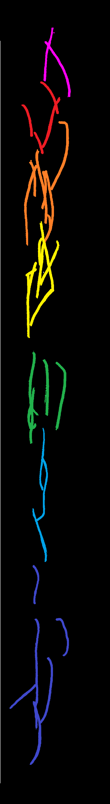 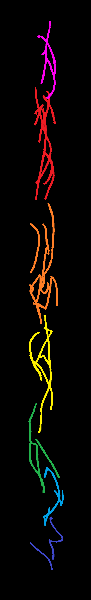 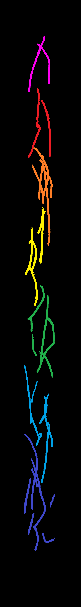これをimagemagickで分解する。
for /l %%x in (1, 1, 22) do (
magick %%x.png -fill black +opaque #ff00f2 a\%%xマ.png
magick %%x.png -fill black +opaque #ed1c24 a\%%x赤.png
magick %%x.png -fill black +opaque #ff7f27 a\%%x橙.png
magick %%x.png -fill black +opaque #fff200 a\%%x黄.png
magick %%x.png -fill black +opaque #22b14c a\%%x緑.png
magick %%x.png -fill black +opaque #00a2e8 a\%%x水.png
magick %%x.png -fill black +opaque #3f48cc a\%%x青.png
magick %%x.png -fill black +opaque #a349a4 a\%%x紫.png
magick %%x.png -fill black +opaque #880015 a\%%x茶.png
magick %%x.png -fill black +opaque #ffaec9 a\%%x桃.png
)
これをtrimして、
for /r %%i in (*.png) do magick %%i -trim %%i
いらない画像を手動で削除し、20青を手動で直し、